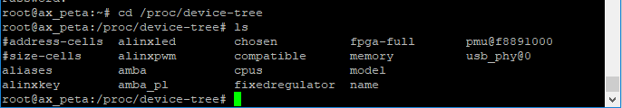
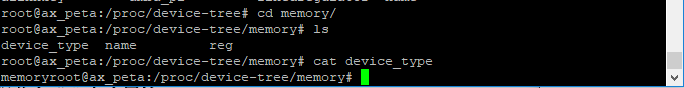
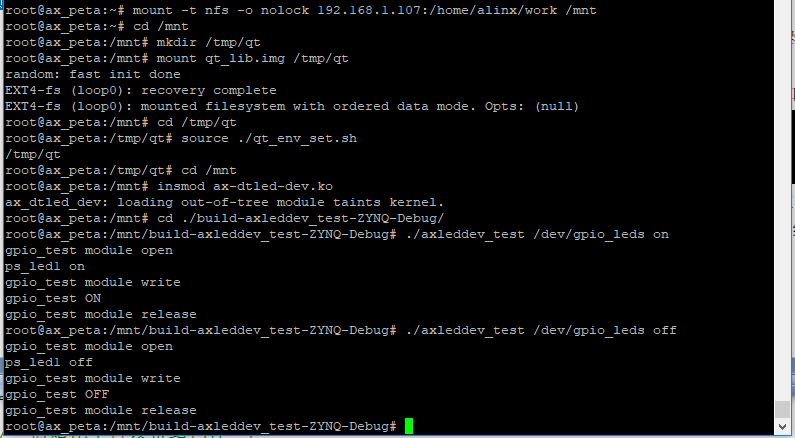
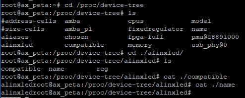

设备树和of函数#
设备树#
ARM Linux3.0以前是没有应用设备树的，那时ARM Linux使用者们用c语言的数据结构来描述板子上的设备，每一个设备就对应到一个描述文件。ARM的板子种类不计其数，而Linux社区为了保证内核源码的通用性，把这些描述文件全部塞了进去，导致Linux内核充满了垃圾代码，震怒了Linux之父Linus。之后ARM社区就学习PowerPC引入了设备树来替代以前的方法。
设备树除了没有用于代码之外还有其他优势。在驱动对应的硬件有变动时，不需要重新编译内核或驱动程序，只需要单独编译设备树文件，在启动板卡时把设备树便宜结果传给内核即可。（遗憾的是，这个优势在petalinux中没有得到体现，petalinux编译出来的结果中，u-boot、内核和设备树被一并打包进了image.ub里，而不是单独提供的。所以变更设备树时，往往会使用petalinux-build命令把内核整体重新编译。其实通过前面两章可以发现，在更改或者新增驱动时，也是整体编译内核的。实际上单独编译驱动是可以的，但是，为了统一操作步骤就都用petalinux-build命令了。）
设备树即树状的设备结构，“树”是个形象的比喻，以系统总线为主干，其他挂在在系统总线上的如I2C、SPI、GPIO控制器等设备为分支，而这些挂载在主干上的分支又有他们自身挂载的设备，如I2C上挂载了EEPROM、RTC等设备，这样的枝干分叉结构就如同树一般。
DTS、DTB和DTSI#
通常我们编辑的设备树文件扩展名为.dtc(device tree source)，而内核读取的设备树文件为编译之后得到的二进制文件.dtb(device tree binary large object)。DTB文件我们也可以直接修改，但是二进制文件修改很不方便，也不是设备树设计的初衷，这里就重点说DTS文件。
DTS文件内容乍一看有点像JSON数据结构，大括号里大括号。当然肯定是有差别的，DTS有自己的一套语法规则，详情可参考官方文档”devicetree-specification-v0.2.pdf”。
先来看一段DTS文件内容，文件arch\arm\boot\dts\zynq-zc702.dts的节选：
#include "zynq-7000.dtsi"
/ {
model = "Zynq ZC702 Development Board";
compatible = "xlnx,zynq-zc702", "xlnx,zynq-7000";
……
memory@0 {
device_type = "memory";
reg = <0x0 0x40000000>;
};
……
gpio-keys {
compatible = "gpio-keys";
#address-cells = <1>;
#size-cells = <0>;
autorepeat;
sw14 {
label = "sw14";
gpios = <&gpio0 12 0>;
linux,code = <108>; /* down */
wakeup-source;
autorepeat;
};
……
};
};
结合这段代码，来大致了解一下DTS的语法格式。
第1行是包含头文件的语句。和c语言一样，DTS文件使用#include来引用头文件，可以引用.h、.dts以及.dtsi文件。”.dtsi”文件是专门用于编写DTS头文件的文件，语法与DTS文件相同，是编写DTS头文件的首选。
节点#
通用节点格式
DTS文件中，设备用节点来表示，格式为：
[label:] node-name[@unit-address] {
[properties definitions]
[child nodes]
};
[]中的部分是非必要项。
node-name是设备节点名称，根节点用”/”表示。第三行的”/”即是设备”Zynq ZC702 Development Board”的根节点。第9行的memory、第11行的gpio-keys、第21行的sw14都是设备节点名称。
unit-address一般是指代设备地址或寄存器首地址，如代码中第9行的 memory@0。如果设备没有设备地址或寄存器就不用写。
label是设备别称，用于便捷访问节点。如一个名称为slcr@f8000000的节点，正常要访问的话，需要用名称slcr@f8000000去访问，如果给这个节点加上标签slcr1: slcr@f8000000，访问节点只需要使用&slcr1即可。
{}里的是节点的内容，节点内容有两类，[properties definitions]是节点属性，后面再讲解。[child nodes]是这个挂在在这个设备节点上的子节点。子节点的格式和上面介绍的一样。
特殊节点aliases
aliases节点用于定义别名，作用于label标签相似，格式如下：
aliases {
ethernet0 = "&gem0";
serial0 = "&uart1";
};
之后便可以使用&gem来访问节点ethernet。
属性#
节点属性[properties definitions]有4种形式：
[label:]property-name;
属性为空值。如示例代码中20行和26行的autorepeat。
[label:]property-name = <arrays of cells>;
用<>括起来的值内容是32位数据的合集。如示例代码11行的reg = <0x0 0x40000000>。
[label:]property-name = “string”;
用””包含的表示字符串，如第五行的compatible = “xlnx,zynq-zc702”, “xlnx,zynq-7000”。
[label:]property-name = [bytestring];
用[]括起来的表示字符序列，这个比较少见，手动举个例子，假设有属性表示为memory-addr = [0011223344];，这个就等同于memory-addr = [00 11 22 33 44];他的值是5个byte型的数组成的序列，并且这个这个byte型的数是两位16进制数组成的。
属性可以用户自定义，也有很多标准属性，下面介绍几种常见的标准属性：
compatible属性
compatible属性也叫兼容性，他的值是字符串列表，是设备和驱动关联的关键，在驱动代码中定义一个OF匹配表来和compatible属性对应。如示例代码17行，节点gpio-keys的 compatible = “gpio-keys”，那么在对应的驱动代码中，就会有以下定义来与之对应：
static const struct of_device_id gpiokeys_ids[] = {
{ .compatible = "gpio-keys", },
{ /* sentinel */ }
};
struct of_device_id是OF匹配表的数据类型。当驱动程序OF匹配表中的compatible 值与设备树节点中的compatible 对应时，这个节点就会使用这个驱动程序。不过在目前我们只用到了字符设备的框架，这个框架还用不上OF匹配表，等后面我们用到总线设备模型时，会再讲到OF匹配表。
根节点中的compatible 属性表示这个板子兼容哪些平台。一般有两个值，前者表示板子的型号，后者表示使用的芯片。
model属性
model属性的值也是字符串，一般用来表示板子的名称，与根节点中的compatible属性类似。
#address-cells、#size-cells和reg属性
#address-cells属性表示当前节点子节点的reg属性中，使用多少个u32整数来描述地址address。
#size-cells属性表示当前节点子节点的reg属性中, 使用多少个u32整数来描述大小length。
reg属性一般用于描述某个外设的寄存器地址范围信息，格式为reg = <address1 length1 address2 length2 address3 length3……>。父节点中的#address-cells属性即指代reg属性中address的大小，#size-cells即指代reg属性中length的大小。
这个在示例代码中也没体现，为了便于理解，举个极端一点的例子：
ax-parent {
#address-cells = <2>;
#size-cells = <1>;
……
ax-son {
reg = <0x00000001 0x00000002 0x00000003
0x00000004 0x00000005 0x00000006>;
……
}
}
子节点ax-son的reg属性的有6个u32的数据，父节点ax-parent中#address-cells等于2，因此子节点ax-son的reg属性的值中表示address的有两个u32的数，即0x00000001、0x00000002这两个数据都是address的值。同理#size-cells等于1，所以length1的值仅有一个u32的数据等于0x00000003。而后面的三个u32数据则是address2和length2的值。
device_type属性
这个属性现在只能用于 cpu 节点或者 memory 节点。在cpu节点中device_type = “cpu”，在memory节点中device_type = “memory”。
phandle属性
phandle属性的取值必须是唯一的，他的作用与label标签相似，用来引用节点。
ax-node-1 {
phandle = <1>;
interrupt-controller;
}
ax-node-2 {
interrupt-parent = <1>;
}
在节点ax-node-1中有phandle属性为<1>，在ax-node-2中interrupt-parent属性需要指定父节点，赋值为<1>即可。
标准属性先介绍这些，还有一些特殊的以后用到在说。
在文件系统中查看设备树#
内核启动时会解析DTB文件中的节点信息，并在根文件系统的/proc/devicetree目录下创建个节点对应的文件夹。
进入到对应的节点中，能查看到节点的各个属性。
修改设备树#
设备树本身有一定的标准，不同的芯片厂家对于设备树有一些不同的自定义标准，我们在修改设备树时，有些需要遵循这些标准，但我们却不知道标准时，可以在内核源码目录/Documentation/devicetree/bindings中查看说明和指导。如果找不到，那就只能咨询芯片厂家了。
of函数#
Linux内核提供了of函数来让我们获取设备树中的信息，of之名来自这些函数的前缀”of_”。of函数的原型定义在内核目录include/linux/of.h中。这节我们介绍一些常用的of函数，没有介绍的等用到的时候再去了解也不迟。
查找节点的of函数#
device_node结构体
device_node结构体也定义在include/linux/of.h中，作为查找节点的of函数的返回值，用于给内核描述设备节点。
of_find_node_by_name函数
of_find_node_by_name ()通过节点名查找节点，函数原型为：
struct device_node *of_find_node_by_name(struct device_node *from, const char *name); |
参数说明：
from：从这个节点开始查找，输入NULL时从根节点开始查找。
name：目标节点名称。
返回值：找到目标节点返回device_node结构体。没有找到时返回NULL。
of_find_node_by_type函数
of_find_node_by_type ()通过device_type属性查找节点，函数原型为：
struct device_node *of_find_node_by_type(struct device_node *from, const char *type); |
参数说明：
from：从这个节点开始查找，输入NULL时从根节点开始查找。
type：device_type 属性值。
返回值：找到目标节点返回device_node结构体。没有找到时返回NULL。
of_find_compatible_node函数
of_find_compatible_node ()通过device_type和compatible属性查找节点，函数原型为：
struct device_node *of_find_compatible_node(struct device_node *from, const char *type, const char *compatible); |
参数说明：
from：从这个节点开始查找，输入NULL时从根节点开始查找。
type：device_type 属性值，输入NULL时忽略。
compatible：compatible 属性值。
返回值：找到目标节点返回device_node结构体。没有找到时返回NULL。
of_find_node_by_path函数
of_find_node_by_path ()通过节点路径查找节点，函数原型为：
struct device_node *of_find_node_by_path(const char *path); |
参数说明：
path：节点的完整路径，以3.1.1节中的示例代码为例，21行的sw14设备的完整路径为/gpio-keys/sw14。
返回值：找到目标节点返回device_node结构体。没有找到时返回NULL。
提取属性的of函数#
property结构体
property结构体同样也定义在include/linux/of.h中，作为提取属性的of函数的返回值，用于给内核描述节点属性。
of_find_property函数
of_find_property 函数通过设备节点、属性名、属性值的大小查找属性，函数原型：
property *of_find_property(const struct device_node *np, const char *name, int *len); |
参数说明：
np：设备节点。
name：目标属性名。
len：目标属性值的长度。
返回值：目标属性。
of_property_read_u32_array函数
of_property_read_u32_array()用于获取有多个值的属性的多个数据，函数名以及输入函数中的u32代表目标属性单个值的大小，可替换为u8、u16、u32。函数原型：
int of_property_read_u32_array(const struct device_node *np,const char *propname, u32 *out_values, size_t size); |
参数说明：
np：设备节点。
propname：目标属性名。
out_values：读取到的数据指针，读取到的数据会保存到这个地址中。
size：要读取数据数量。
返回值：
0：读取成功；
-EINVAL：属性不存在；
-ENODATA：属性无数据；
-EOVERFLOW：属性值数据数量小于size。
of_property_read_u32 函数
of_property_read_u32()用于获取只有单个值的属性数据，函数名以及输入函数中的u32代表目标属性单个值的大小，可替换为u8、u16、u32。函数原型：
int of_property_read_u32(const struct device_node *np,const char *propname, u32 out_value); |
参数说明：
np：设备节点。
propname：目标属性名。
out_values：目标数据指针，读取到的数据会保存到这个地址中。
返回值：
0：读取成功；
-EINVAL：属性不存在；
-ENODATA：属性无数据。
of_property_read_string 函数
of_property_read_string 函数用于读取属性中字符串值，函数原型如下：
int of_property_read_string(struct device_node *np, const char *propname, const char **out_string); |
参数说明：
np：设备节点。
proname：目标属性名。
out_string：目标字符串指针，读取到的字符串会保存到该地址。
返回值：返回0读取成功。
设备树下的led驱动实验#
通过上面两节大概了解设备树和of函数之后，光看书面上的东西很难理解深刻，还是得通过实验来深入理解。这节还是使用简单的led设备来测试，不会涵盖上面讲的所有，但是在以后的实验中，会一直用到设备树，所以不用着急，在之后的实验中慢慢去掌握就行了。
原理图#
和 字符设备 章节1的内容相同。
修改设备树#
petaliunx的工程文件中提供了让我们修改的设备树文件，在工程目录”ax_peta/project-spec/meta-user/recipes-bsp/device-tree/files”中，ax_peta是我的petalinux工程命，需要根据自身实际情况修改。
打开文件”system-conf.dtsi”，在根节点下添加以下节点内容：
alinxled {
compatible = "alinxled";
reg = <
0xE000A204 0x04 /* gpio 方向寄存器 */
0xE000A208 0x04 /* gpio 使能寄存器 */
0xE000A040 0x04 /* gpio 控制寄存器 */
0xF800012C 0x04 /* AMBA 外设时钟使能寄存器 */
>;
};
节点名称为alinxled，兼容性属性值为”alinxled”，reg中的值即为在前两次实验中用到的led相关的寄存器。
如果你的”system-conf.dtsi”文件是空的，那就自己写一个根目录，再把上面的内容放进根目录即可。
驱动程序#
使用petalinux新建名为”ax-dtled-drv”的驱动程序，别忘了用petalinux-config -c rootfs命令选上新增的驱动程序。
在ax-dtled-drv.c文件中输入下面的代码：
#include <linux/module.h>
#include <linux/kernel.h>
#include <linux/fs.h>
#include <linux/init.h>
#include <linux/ide.h>
#include <linux/types.h>
#include <linux/errno.h>
#include <linux/cdev.h>
#include <linux/of.h>
#include <linux/device.h>
#include <asm/uaccess.h>
/* 设备节点名称 */
#define DEVICE_NAME "gpio_leds"
/* 设备号个数 */
#define DEVID_COUNT 1
/* 驱动个数 */
#define DRIVE_COUNT 1
/* 主设备号 */
#define MAJOR
/* 次设备号 */
#define MINOR 0
/* gpio 寄存器虚拟地址 */
static u32 *GPIO_DIRM_0;
/* gpio 使能寄存器 */
static u32 *GPIO_OEN_0;
/* gpio 控制寄存器 */
static u32 *GPIO_DATA_0;
/* AMBA 外设时钟使能寄存器 */
static u32 *APER_CLK_CTRL;
/* 把驱动代码中会用到的数据打包进设备结构体 */
struct alinx_char_dev{
dev_t devid; //设备号
struct cdev cdev; //字符设备
struct class *class; //类
struct device *device; //设备
struct device_node *nd; //设备树的设备节点
};
/* 声明设备结构体 */
static struct alinx_char_dev alinx_char = {
.cdev = {
.owner = THIS_MODULE,
},
};
/* open 函数实现, 对应到 Linux 系统调用函数的 open 函数 */
static int gpio_leds_open(struct inode *inode_p, struct file *file_p)
{
/* MIO_0 时钟使能 */
*APER_CLK_CTRL |= 0x00400000;
/* MIO_0 设置成输出 */
*GPIO_DIRM_0 |= 0x00000001;
/* MIO_0 使能 */
*GPIO_OEN_0 |= 0x00000001;
printk("gpio_test module open\n");
return 0;
}
/* write 函数实现, 对应到 Linux 系统调用函数的 write 函数 */
static ssize_t gpio_leds_write(struct file *file_p, const char __user *buf, size_t len, loff_t *loff_t_p)
{
int rst;
char writeBuf[5] = {0};
printk("gpio_test module write\n");
rst = copy_from_user(writeBuf, buf, len);
if(0 != rst)
{
return -1;
}
if(1 != len)
{
printk("gpio_test len err\n");
return -2;
}
if(1 == writeBuf[0])
{
*GPIO_DATA_0 &= 0xFFFFFFFE;
printk("gpio_test ON\n");
}
else if(0 == writeBuf[0])
{
*GPIO_DATA_0 |= 0x00000001;
printk("gpio_test OFF\n");
}
else
{
printk("gpio_test para err\n");
return -3;
}
return 0;
}
/* release 函数实现, 对应到 Linux 系统调用函数的 close 函数 */
static int gpio_leds_release(struct inode *inode_p, struct file *file_p)
{
printk("gpio_test module release\n");
return 0;
}
/* file_operations 结构体声明, 是上面 open、write 实现函数与系统调用函数对应的关键 */
static struct file_operations ax_char_fops = {
.owner = THIS_MODULE,
.open = gpio_leds_open,
.write = gpio_leds_write,
.release = gpio_leds_release,
};
/* 模块加载时会调用的函数 */
static int __init gpio_led_init(void)
{
/* 用于接受返回值 */
u32 ret = 0;
/* 存放 reg 数据的数组 */
u32 reg_data[10];
/* 通过节点名称获取节点 */
alinx_char.nd = of_find_node_by_name(NULL, "alinxled");
/* 4、获取 reg 属性内容 */
ret = of_property_read_u32_array(alinx_char.nd, "reg", reg_data, 8);
if(ret < 0)
{
printk("get reg failed!\r\n");
return -1;
}
else
{
/* do nothing */
}
/* 把需要修改的物理地址映射到虚拟地址 */
GPIO_DIRM_0 = ioremap(reg_data[0], reg_data[1]);
GPIO_OEN_0 = ioremap(reg_data[2], reg_data[3]);
GPIO_DATA_0 = ioremap(reg_data[4], reg_data[5]);
APER_CLK_CTRL = ioremap(reg_data[6], reg_data[7]);
/* 注册设备号 */
alloc_chrdev_region(&alinx_char.devid, MINOR, DEVID_COUNT, DEVICE_NAME);
/* 初始化字符设备结构体 */
cdev_init(&alinx_char.cdev, &ax_char_fops);
/* 注册字符设备 */
cdev_add(&alinx_char.cdev, alinx_char.devid, DRIVE_COUNT);
/* 创建类 */
alinx_char.class = class_create(THIS_MODULE, DEVICE_NAME);
if(IS_ERR(alinx_char.class))
{
return PTR_ERR(alinx_char.class);
}
/* 创建设备节点 */
alinx_char.device = device_create(alinx_char.class, NULL,
alinx_char.devid, NULL, DEVICE_NAME);
if (IS_ERR(alinx_char.device))
{
return PTR_ERR(alinx_char.device);
}
return 0;
}
/* 卸载模块 */
static void __exit gpio_led_exit(void)
{
/* 注销字符设备 */
cdev_del(&alinx_char.cdev);
/* 注销设备号 */
unregister_chrdev_region(alinx_char.devid, DEVID_COUNT);
/* 删除设备节点 */
device_destroy(alinx_char.class, alinx_char.devid);
/* 删除类 */
class_destroy(alinx_char.class);
/* 释放对虚拟地址的占用 */
iounmap(GPIO_DIRM_0);
iounmap(GPIO_OEN_0);
iounmap(GPIO_DATA_0);
iounmap(APER_CLK_CTRL);
printk("gpio_led_dev_exit_ok\n");
}
/* 标记加载、卸载函数 */
module_init(gpio_led_init);
module_exit(gpio_led_exit);
/* 驱动描述信息 */
MODULE_AUTHOR("Alinx");
MODULE_ALIAS("gpio_led");
MODULE_DESCRIPTION("DEVICE TREE GPIO LED driver");
MODULE_VERSION("v1.0");
MODULE_LICENSE("GPL");
和上一章有区别的地方加粗了。
主要的改动集中在入口函数的120~137行。
126行使用of_find_node_by_name函数通过节点名称获取节点，因为alinxled节点挂在在根目录下，所以第一个参数输入NULL。
128行，在获取到节点后，再获取节点中的reg属性的数据，因为reg属性中存放着我们需要的寄存器地址和大小。总共4个地址4个size，因此数据总数为8。
其他的操作与上一章基本相同。
因为修改了设备树，petalinux在修改设备树后，会编译出新的BOOT.bin和image.ub。所以别忘了在编译完成后，把新的BOOT.bin和image.ub拷贝到SD中，并重启开发板。
测试程序#
测试APP与 字符设备 章节内容一致，可以直接使用。
运行测试#
因为APP相同，所以测试方法任然相同，只要能成功点亮led就成功了。
另外在系统运行之后，查看以下/proc/device-tree路径中有没有我们添加的alinxled节点，并核对内容。
